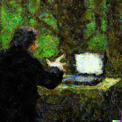
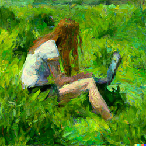

Welcome to the NorESM Land Sites Platform
The NorESM-LSP software allows anyone to run simple, offline, single-site simulations with the demographic dynamic global vegetation model NorESM-CLM-FATES. Our aim is to improve access to this process-based modelling framework. The software is free and open, and might be used ...
- In education, such as interdisciplinary workshops or data labs in Ecological Climatology-related university courses, where model experiments will typically be simple and designed to increase understanding of the model framework and Earth System Science.
- By beginner modelers, e.g. post-graduate students or scientists who are new to CLM-FATES modelling, to set up scientific model experiments under the supervision of or in collaboration with more experienced modelers.
- By experienced modelers without access to HPC clusters with the models installed, who benefit from the containerisation of the model.
 
Model experiments with CLM-FATES simulate potential vegetation. What ecosystem would appear where you are right now, in the absence of human land use?